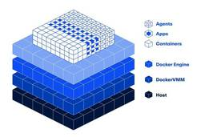

Publickey
https://www.publickey1.jp/
Enterprise ITに軸足を置き、新たにIT業界を変えつつあるクラウドコンピューティングやHTML5など最新の話題を、ブロガー独自の分析を交え、充実した記事で紹介するブログです。毎日更新しています。
フィード

Flutter 3.47正式リリース。UIライブラリが分離され独立してアップデート可能、デフォルトでWebAssemblyを生成する方向に、など新機能 8
8
Publickey
Googleは、Dart言語によるアプリケーションフレームワークの最新版「Flutter 3.47」正式リリースを発表しました。 We’ve pieced together something special... Flutter 3.47...
2日前

Docker社、コンテナ向けの高性能な新ハイパーバイザ「Docker VMM」パブリックベータ公開 65
Publickey
Docker社は独自開発したコンテナ向けの高性能な新ハイパーバイザ「Docker VMM」をパブリックベータとして公開しました。WindowsとmacOSに対応した最新の「Docker Desktop v4.86」で利用可能です。 Toda...
3日前
Pythonライクな新言語「Mojo」がオープンソースで公開、コンパイラやツールチェーンなど。Windows版の開発も表明 19
Publickey
Pythonライクな新言語「Mojo」の開発元であるModular社は、Mojoをオープンソースとして公開したことを、同社主催のイベント「ModCon 2026」で発表しました。 具体的にはMojoのコンパイラとツールチェーンがGitHub...
3日前
コードからDockerfile不要でOCIコンテナをビルド。「Cloud Native Buildpacks」が十分成熟したとしてCNCFの卒業プロジェクトに 62
Publickey
Cloud Native Computing Foundation（CNCF）は、アプリケーションのソースコードから直接OCIコンテナメージを構築するツールである「Cloud Native Buildpacks」が十分成熟したとして、卒業プ...
4日前

Google、AIモデルをコンパイルして暗号データを復号せずに扱えるように変換する「HEIR」発表。完全準同型暗号を利用し、AIでのセキュリティやプライバシー保護など実現へ 4
Publickey
Googleは、完全準同型暗号を利用したAIモデル用のオープンソースコンパイラ「HEIR」を発表しました。 AIモデルをコンパイルする「HEIR」 HEIRはAIモデル用のコンパイラとツールチェーンであり、これを用いて学習済みAIモデルのP...
4日前
AIエージェント時代のGitホスティングサービス「Origin」、Cursorが発表。Cursorとの統合、コマンドラインでの操作、GitHubとの同期など提供 18
Publickey
AIコードエディタのCursorなどを提供するAnysphereは、Gitに対応したコードホスティングサービス「Origin」を発表しました。 Origin, our code hosting platform, is now live.I...
4日前
事例で学ぶ、SaaSの開発を加速しつつプロダクト品質も引き上げる上手な方法とは？［PR］
Publickey
.jetform-wrapper { border: 2px solid #ccc; /* 枠線 / padding: 20px; / 内側の余白 / border-radius: 12p...
5日前
Visual Studio Code 1.133正式リリース。プロンプトを見失わない固定スクロール、ローカルHTMLファイルの自動リロード、ClaudeとCopilotの混在可能など新機能 19
Publickey
マイクロソフトはオープンソースで開発されているコードエディタの最新版「Visual Studio Code 1.133」（以下、VS Code 1.133）の正式リリースを発表しました。 The latest @code release b...
5日前

Pythonライクで高速な「Mojo言語」がバージョン1.0に到達、今後はコンパイラをオープンソース化すると表明 41
Publickey
Modular社は、AIを高速に実行することを目指したPythonライクなプログラミング言語「Mojo」がバージョン1.0に到達したことを発表しました。 Mojo 1.0 is here.Since we open-sourced the ...
5日前

タブもテーマも拡張機能もないAI専用の超軽量ヘッドレスブラウザ「Kitesurf」、Cloudflareが発表 103
Publickey
CloudflareはAIエージェントによる操作専用のヘッドレスなWebブラウザ「Kitesurf」を発表しました。 現在ベータ版として公開されています。 Kitesurfは主にRust言語で記述されWebAssemblyにコンパイルされた...
6日前

Zed開発チームが「Delta」発表。人間とAIの全対話とコード変更履歴をコンテキストとして保存共有するコラボレーションツール 64
Publickey
オープンソースとして開発されている高速なコードエディタ「Zed」の開発チームは、人間の開発チームとAIエージェントの議論や対話内容とコードの変更履歴をすべて共有し、コンテキストとして保存できる「Delta」を発表しました。 Today we...
6日前

無料で使える「Delphi 13 Community Edtion」提供開始。Windows x86/Arm、Mac、iOS、Androidのネイティブアプリなど開発可能 15
Publickey
米エンバカデロ・テクノロジーズは、無料で使える統合開発環境「Delphi 13 Community Edtion」の提供開始を発表しました。 Delphi 13 Community Edition is now available!The ...
6日前

無料で読めるITまんが 2026年版 ～マンガでわかるAIの仕組み／DC業務のリアルを知るヤマダくん、ほか
Publickey
ネット上にはたくさんのIT系のコンテンツがあふれています。そのほとんどは文章として書かれていますが、一部にはマンガの形で面白く分かりやすくしたものもあります。 ここでは、マンガ化されたITコンテンツを集めてみました。毎年夏休みの恒例企画、I...
11日前
「Agent Plugins 1.0.0」発表、異なるAIエージェント間でもスキルやMCPサーバ設定が共通化へ。マイクロソフト、OpenAI、AWS、Googleらがサポート
Publickey
AWS、マイクロソフト、OpenAI、Anysphere、Vercelの各社は、AIエージェントのスキルやMCPサーバの設定を、AIエージェントが異なっていても共有できる業界標準の仕様「Agent Plugins 1.0.0」を発表しました...
13日前
ミッチェル・ハシモト氏が新会社「Superlogical」を設立、あらゆる仕事に使えるマルチプレクサの開発へ
Publickey
HashiCorpの共同創業者であり、同社を退社後は個人開発者としてターミナルソフト「Ghostty」の開発を進めていたミッチェル・ハシモト氏が、新会社［Superlogical」の設立を発表しました。 I've started a...
16日前